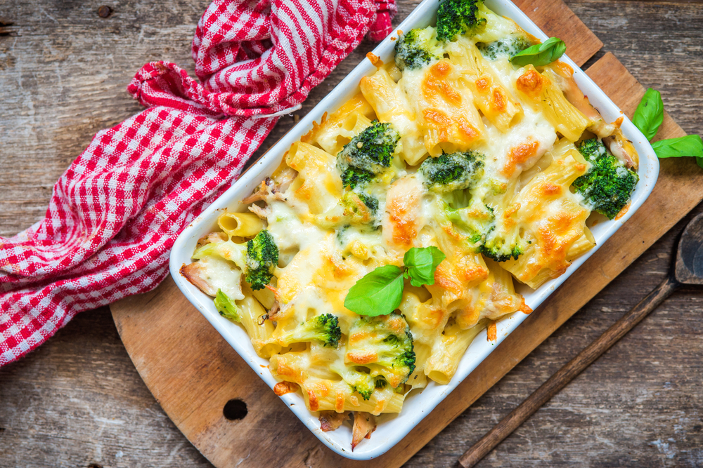
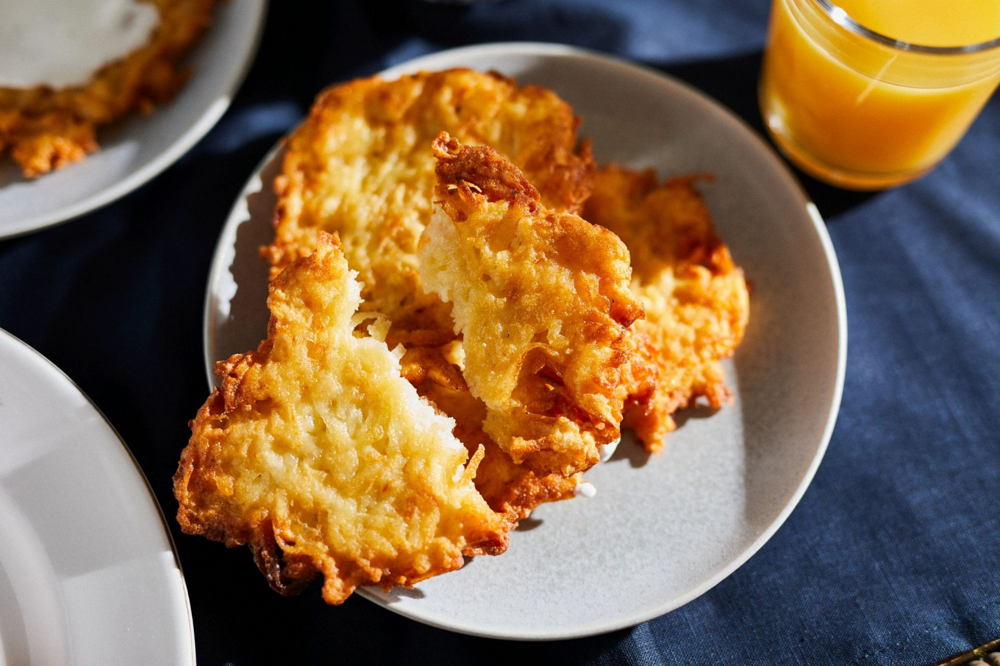
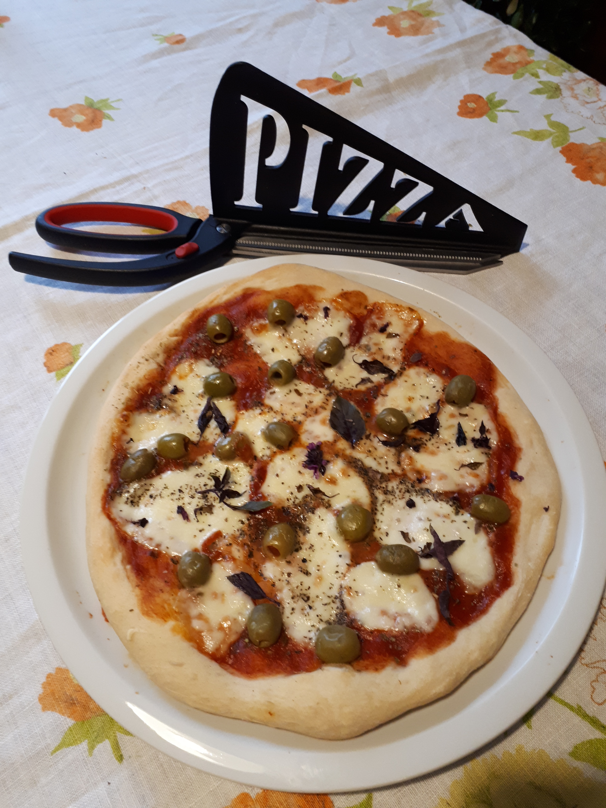
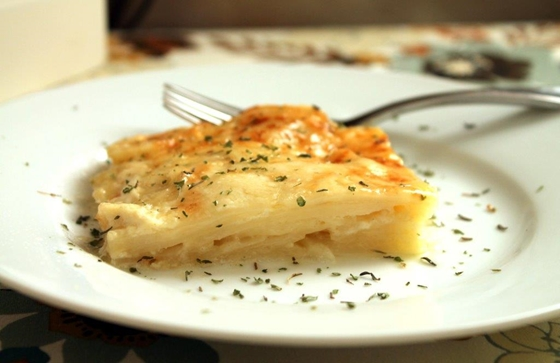

Családi finomságok - Főételek
Ez egy családi recepteket összegyűjtő weboldal.
Sütőben sült kacsacomb

Ez a főétel a legtöbb családi ünnepi ebéd kedvence. A kacsacomb hidegen is kiváló.
Hozzávalók:
Kacsacomb, fokhagyma, zsiradék/kacsazsír, lilakáposzta, olaj, só, bors
- A kacsacombokat sózzuk, borsozzuk.
- Sütőedénybe tesszük egy kis zsiradékkal, ill. fokhagymával.
- 180 fokos sütőben lefedve, másfél órát pároljuk.
- A sütést lefedés nélkül 200 fokon befejezzük, közben többször saját zsírjával locsolgatjuk, míg meg nem pirul a comb.
- A lilakáposztát legyaluljuk, sózzuk, borsozzuk. Kevés cukrot karamellizálunk, rátesszük a káposztát és ecettel ízesítve megpároljuk.
- A sült kacsacombokat a párolt lilakáposztával tálaljuk. Készíthetünk hozzá köretként
hagymás krumplit, tálalhatjuk kevés vajon párolt almával, birsalmával.
Zöldséges tészta

A zöldséges, tejszínes, sajtos tészta a sógornőm specialitása.
Gyakran készíti, mert ez egyszerű, és igen finom, kiadós étel, amely minden ízlést kielégít. Családi finomság, amely annál jobb, minél több zöldség van benne.
Hozzávalók:
Mirelit zöldség keverék - egy tasak, olaj/vaj, tejszín - 2dl, tömlős ömlesztett sajt - 3 féle, reszelt sajt - 2 féle, só, bors, fokhagymapor,
durum tészta - egy tasak. (Olyat válasszunk, amelyik recés felületű, hogy a szósz rátapadjon.)
- Egy nagyobb lábasban olajon és vajon pároljuk a zöldséget. Sózzuk, borsozzuk.
- Hozzáadjuk a doboznyi tejszínt, és a tömlős sajtokat. Pl. medvehagymásat, csípős paprikásat és natúrt.
- Készre pároljuk a zöldségeket, majd belekeverjük a reszelt sajtok felét, a fokhagymaport.
- A durum tésztát megfőzzük.
- A főtt tésztát a zöldségkeverékre szedjük - leöblítés nélkül-, és összeforgatjuk.
- Jénai tálra, vagy kisebb sütőedénybe tesszük, és a maradék reszelt sajttal borítjuk.
- Sütőben megpirítjuk. Tálaljuk.
Tócsni

A tócsni egy nagyon egyszerű és gyorsan elkészíthető étel. Ha nem köretként, hanem egy kisebb étkezéshez készítjük,
nagyon finom fokhagymás tejföllel. Tálalhatjuk sonkával vagy bármilyen más pizza feltéttel. Jó sörkorcsolya is.
Nyáron a reszelt krumpli mellé tehetünk hozzá reszelt cukkínit is.
Hozzávalók:
75 dkg krumpi, só, bors, 3 evk liszt, 1 db kis tojás, olaj a sütéshez.
- A krumplit meghámozzuk és lereszeljük, megszórjuk 1 teáskanál sóval, és állni hagyjuk 5 percig.
- Ezután kézzel vagy egy konyharuhában kinyomkodjuk belőle a vizet, és egy tálba rakjuk. Ha sok víz marad benne, több liszt kell hozzá.
- Megszórjuk egy csipet sóval, borsozzuk, belekeverjük a lisztet, majd a tojást. 10 percet pihentetjük, hogy egy kicsit összeálljon.
- Egy serpenyőben közepes hőmérsékletűre hevítjük az olajat (kb. 1 cm magasan), és kanállal beleszaggatjuk, ellapogatjuk a keveréket.
- Aranybarnára sütjük a tócsnik mindkét oldalát.
- Papírtörlőn lecsepegtetjük, tálaljuk.
Szilvás gombóc, gnocci, nudli
Van a kertünkben egy kisméretű szilvát termő gyümölcsfa. Ez az apróbb szilva pont gombócba való.
Amikor terem a fa, hetente készítem a szilvásgombócot. Klasszikus étel, és a férjem számára kellemes gyerekkori
élményt ébreszt. Szezonban sárgabarack érésekor sárgabarackkal is készíthetjük.
| Hozzávalók |
Gombóc |
Gnocci |
Nudli |
| burgonya |
50 dkg |
50 dkg |
60 dkg |
| liszt |
25 dkg |
15 dkg |
20 dkg |
| tojás |
1 db |
1 db |
- |
| zsiradék |
1 evőkanál vaj |
- |
1 dkg zsír |
| só |
csipet |
csipet |
csipet |
- A krumplit héjában megfőzzük, még melegen megtisztítjuk, megtörjük.
- A lisztet, tojást, sót és zsiradékot hozzágyúrjuk.
- Lisztezett lapon 5 mm vastag téglalap alakúra nyújtjuk. Egyforma négyzetekre vágjuk.
- Középre egy egy fahéjas cukorba forgatott magozott szilvát teszünk.
- Gombóccá formáljuk, és lobogó forró sós vízben kifőzzük.
- Zsemlemorzsát kevés vajon/olajon pirítunk, és a főtt gombócokat ebbe beleforgatjuk. Fahéjas porcukorral tálaljuk.
A gnocci tésztájából ujjnyi rudakat sodorjunk, és a 2 cmre vágott darabokat a villa fokával megynyomva bordázzuk,
hogy a szósz jól megtapadjon rajta. Parmezánnal, olívaolajjal, pestóval (paradicsommártással) tálalhatjuk.
A nudli tésztájából is ujjnyi rudakat sodrunk, körömnyi darabokra vágjuk, és két tenyerünk között kis nudkikat sordrunk.
Sós vízben kifőzve olajban pirított sok-sok zsemlemorzsával, lekvárral kínáljuk.
Töltött gomba
A töltött gomba receptjét a húgomtól kaptam. Nem csak köretként, de főételként is
megállja a helyét. Ennek a tölteléke húsmentes, de ízlés szerint darált hússal, feta sajttal, túróval is tölthető. Nem nagy dolog az egész.
Hozzávalók:
8 nagy fej gomba, egy lilahagyma, olaj, piros húsú paprika, só, bors, 3 evk zsemlemorzsa, petrezselyem, 2 tojás, vaj, reszelt sajt/sajtszelet a tetejére.
- A gombát megmossuk, szárát eltávolítjuk. A tönköket feldaraboljuk.
- Az apróra vágott lilahagymát kevés olajon megpároljuk, a gomba szárával és az összekockázott piros paprikával, hogy szép színe legyen.
- Ízesítjük sóval, borssal, petrezselyemzölddel. Belekeverjük a zsemlemorzsát, majd jól összepirítjuk. Ez felszívja a gomba nedvességét.
- A kész tölteléket kicsit hűtjük, majd hozzákeverjük a tojásokat, és még azt, amit gondolunk.(Darált húst, feta sajtot, juhtúrót...).Ízesítjük.
- A tölteléket a gombafejekbe töltjük, kevés vajat teszünk rá és kiolajozott, fólával lefedett tálban kb fél óráig sütjük.
- Ha kész, a fóliát levesszük és mindegyik gomba tetejére reszelt sajtot, vagy egy vastagabb sajtszeletet teszünk, amit a sütőben még rápirítunk.
Pizza

A családi finomságok közt akkor jelent meg a pizza, amikor Eszter lányom maga készítette pizzával kápráztatta el a családot.
| Hozzávalók |
Családi |
Olasz alap |
Jamie féle |
| liszt |
50 dkg |
50 dkg |
50 dkg |
| só |
1 tk |
1 tk tengeri |
2 tk |
| élesztő |
1 tasak szárított |
1 tasak szárított + 1 kk cukor |
1 tasak szárított |
| olaj |
csak a tepsibe |
60 ml |
- |
| langyos víz |
kb 2 dl |
250 ml |
290 ml |
| Feltét |
Eszter féle |
Olasz alap |
Jamie féle |
| paradicsom |
1 sűrített püré hígítva |
1 konzerv botmixerrel aprítva |
1 tubus paradicsom püré |
| mozzarella |
szeletelve és trappista reszelve |
mozzarella golyók |
mozzarella csipkedve |
| füszerek |
oreganó, só, bors, bazsalikom |
oregano |
bazsalikom |
| sütés |
250 fokon, amíg a sajt megolvad |
220 fokon |
220 fokon |
- A tészta hozzávalóit összekeverjük, géppel kb 10 percig dagasszuk, majd kb 30 percig kelesszük.
- A tésztát osszuk kisebb egységekre a sütő formának megfelelően. Pl 3-4 gombócra.
- Kézzel formázzuk kerekre, vagy nyomkodjuk kiolajozott tepsibe.
- Kenjük szét rajta a paradicsompürét, szórjuk meg oreganóval, sóval, borssal.
- Mozzarellát daraboljuk rá, reszelhetünk rá még trappista sajtot is.
- 220 fokon 15 percig süssük, illetve addig, amíg a sajt megolvad.
- Ha kész, olívaolajjal meglocsoljuk, friss bazsalikommal megszórjuk. Tálaljuk.
Burgonya gratin

Ez a francia eredetű étel nagyon kevés hozzávalót kíván, egyszerű elkészíteni, a végeredmény pedig egy krémesen lágy,
ízekben gazdag fogás, ami köretként, de főtt céklával, sütőtökkel, sajttal, sonkával gazdagítva könnyű ebédként, vacsoraként is remek.
Hozzávalók:
Burgonya 1 kg, tejszín 5 dl, vaj 15 dkg, fokhgya 2 gerezd, só, bors.
- A burgonyát egészben megfőzzük, tisztítjuk és kb 3 mm-es szeletekre vágjuk.
- Egy tálat kivajazunk, majd a burgonyát rétegezve belerakjuk. Minden réteget sózunk, borsozunk.
- A tejszínt elkeverjük az összezúzott fokhagymával, és a burgonya tetejére öntjük.
- A vajat rádaraboljuk.
- 200 fokos sütőben megpirítjuk.
- A tetejét megszórhatjuk reszelt sajttal. Póréhagymával rétegezve is finom.
A főtt burgonyát rétegezhetjük főtt cékla szeletekkel vagy sütőtökkel is. Ha sütőtökkel készítem,
akkor tejszín helyett currys joghurttal öntöm le. Ha nyers zöldségeket rétegezünk, akkor fedve süssük
min. 30 percig, majd borítás nélkül pirítsuk .